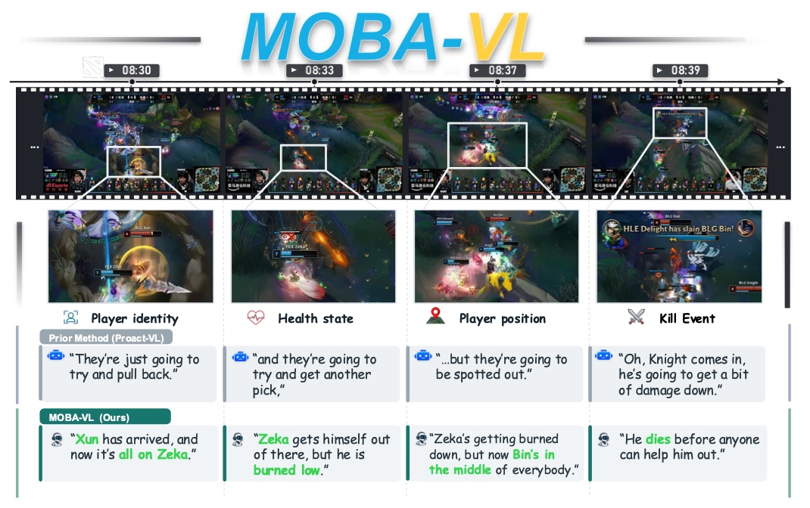
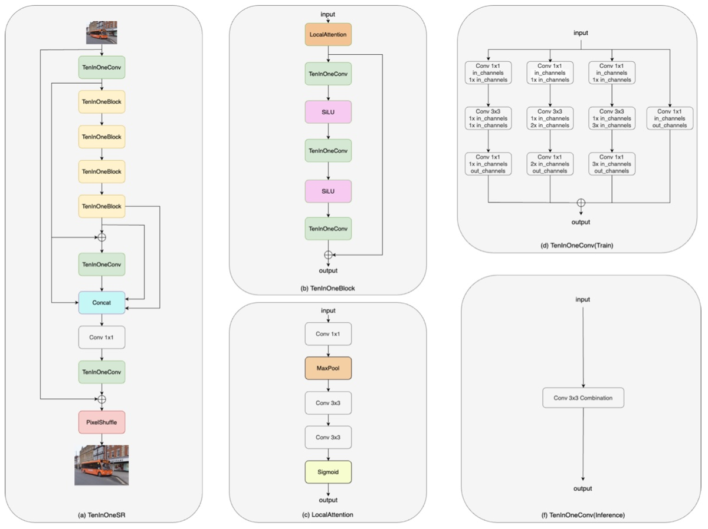

Shengyun Zhong
About Me
I am a master's student in Electrical and Computer Engineering at Northeastern University, expected to graduate in December 2026. I received my B.S. in Computer Science from Zhejiang University of Science and Technology. I have been fortunate to be advised by Prof. Linchao Zhu (Zhejiang University) and Prof. Zhengzhong Tu (Texas A&M University).
I am looking for Ph.D. positions starting Spring / Fall 2027. If you have a suitable opening, I would be grateful if you could contact me.
Research Interests
- Unified Multimodal Understanding and Generation: towards a single model that both understands and generates images and videos
- World Action Models: models that predict how the world evolves and act on it, bridging video world models and vision-language-action (VLA) policies
News
- [Nov. 2026] I am applying for Ph.D. programs for Spring / Fall 2027.
- [Sept. 2026] Our preprint MOBA-VL on real-time MOBA commentary is released on arXiv.
- [2025] Our team's TenInOneSR solution is included in the NTIRE 2025 Efficient Super-Resolution Challenge report (CVPR 2025 Workshop).
Publications
-

PreprintarXiv preprint arXiv:2609.38428, 2026.
Challenge Reports
-

CVPRWIEEE/CVF Conference on Computer Vision and Pattern Recognition Workshops (CVPRW), 2025.arXiv Team TACO_SR (TenInOneSR)
Powered by Minimal Light theme.